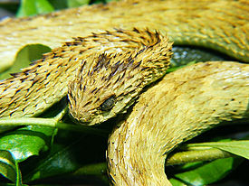
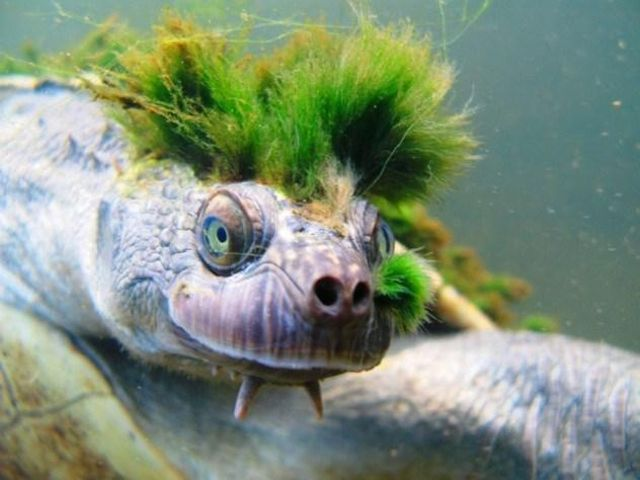

Колюча чагарникова гадюка — отруйна змія із родини Гадюкових, яка мешкає в Центральній Африці. Відома тим, що має надзвичайно вигнуту будову лусочок, які надають їй щетинистого вигляду. Підвидів не виділяють.

Черепаха річки Мері мешкає виключно в річці Мері в штаті Квінсленд, Австралія. Її забарвлення може бути червоним, рожевим, коричневим або чорним. Її голова маленька, а хвіст довгий порівняно з усім тілом, він може виростати майже до довжини панцира. Під підборіддям є довгі виступи, які називаються вусиками. Самки черепахи річки Мері досягають зрілості протягом 25 років, самці - 30, що для черепах є дуже тривалим періодом.
Черепаха часто виринає з води, щоб вдихнути, але вона також може отримувати кисень і у воді. Кисень надходить у її тіло через органи, розташовані в її хвості. Черепаха проводить більшу частину свого життя в річці, дозволяючи водоростям рости на її тілі. Вона використовує водорості як маскування. На зображенні водорості на голові черепахи виглядають як волосся, через що вона отримала прізвисько "черепаха - панк-рокер".